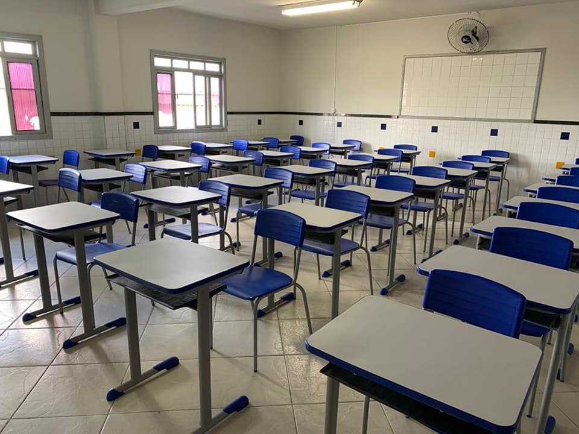
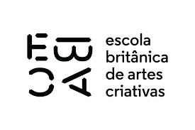

Escolas ganham carteiras novas
Como parte de um investimento na infraestrutura educacional, várias escolas foram beneficiadas com a aquisição de carteiras novas. Essa iniciativa visa proporcionar um ambiente de aprendizagem mais confortável e adequado para os alunos, contribuindo para o seu bem-estar e rendimento acadêmico. A substituição das antigas carteiras por modelos mais modernos e ergonômicos reflete o compromisso em oferecer uma educação de qualidade.
Ler mais

Formatura de faculdade reune mais de 10 mil pessoas
A emocionante cerimônia de formatura de uma faculdade atraiu uma impressionante quantidade de mais de 10 mil pessoas. O evento foi marcado por momentos de alegria, orgulho e celebração, conforme os formandos foram reconhecidos por suas conquistas acadêmicas. Familiares, amigos e membros da comunidade acadêmica se reuniram para prestigiar e aplaudir os graduados, testemunhando o encerramento de um importante capítulo em suas vidas.
Ler mais

EBAC reconhecida como melhor lugar para estudar!
A EBAC (Escola Britânica de Artes Criativas) recebeu o merecido reconhecimento como o melhor lugar para estudar. Sua excelência acadêmica, infraestrutura de ponta e corpo docente altamente qualificado foram destacados como os principais fatores que contribuíram para essa conquista. Além disso, a EBAC se destaca por sua abordagem inovadora no ensino das artes criativas, proporcionando aos alunos uma experiência educacional enriquecedora e inspiradora. O título de melhor lugar para estudar é um testemunho do compromisso da EBAC em fornecer uma educação de qualidade e preparar os estudantes para se destacarem em suas respectivas áreas.
Ler mais